Пусть говорят: Как пожилая сладкоежка c чудовищной генетической склонностью к полноте избавилась от 35 килограммов без диет и тренировок
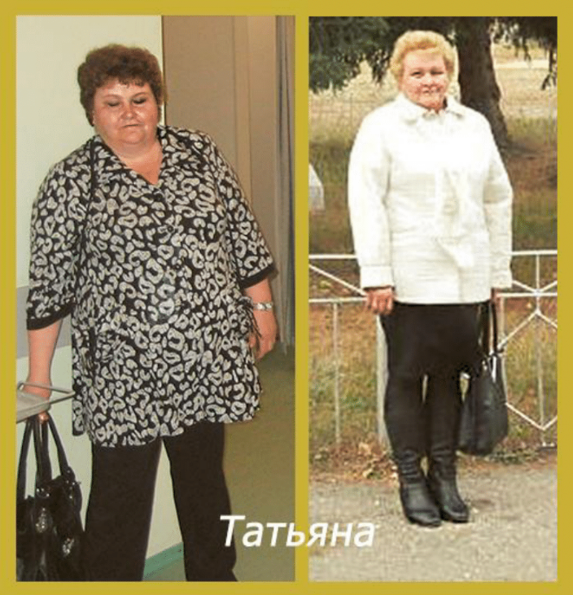
Посмотрите на это фото
Кого вы видите здесь?
Я вижу несчастную женщину, придавленную к земле килограммами жира.
С потухшими глазами, стонущим от нагрузки позвоночником.
С единственной радостью в жизни – вкусно поесть.
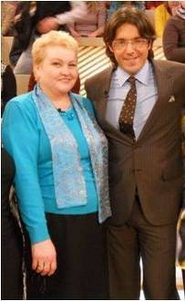
А теперь посмотрите сюда
Счастливая, жизнерадостная, веселая, с модной стрижкой, горящим взглядом и… легче на целых 35 килограммов! Вы верите в то, что это – один и тот же человек?
Даже мне верится сейчас с трудом. Между тем, на обеих фотографиях – я. И да, на второй я действительно стою рядом с телеведущим Андреем Малаховым.
В последнее время все больше людей, вдохновленных моим преображением, задают один и тот же вопрос: «Как тебе это удалось?»
Чтобы не пересказывать историю каждому лично, я решила сделать эту запись и рассказать все как было. Если кому-то моя откровенность поможет выйти из-под «гнета» лишнего веса, как это получилось у меня, буду очень рада.
«У вас никогда не будет собственных детей»
Полной я была с тех пор, как себя помню. В нашей семье все «немаленькие», так что генетика у меня в этом смысле была далеко не лучшая. К тому же, я с детства была страшной сладкоежкой. День без конфет казался чуть ли не пропащим. Неудивительно, что на выпускных фотографиях я была самой толстой девушкой среди всех одноклассниц.
И, тем не менее, в юности мой вес еще держался в каких-то терпимых рамках. Очевидная полнота не помешала благополучно устроить личную жизнь, выйти замуж. А дальше…
Даже худые люди часто «нагуливают жирок» после свадьбы. Я не была исключением. Мой вес год от года потихоньку увеличивался. Но по-настоящему я осознала проблему только тогда, когда мы с мужем задумались о продолжении рода.
Мы оба страстно хотели ребенка. Подолгу обсуждали, как будем воспитывать, нянчить, присматривали даже вещички для малыша...
А забеременеть все не получалось. Пошла я по врачам – и услышала страшный диагноз: бесплодие. Из-за ожирения все мои гормоны «пошли вразнос». И привести их в порядок можно было только одним способом: похудеть. Вот только похудеть я на тот момент уже не могла.
Когда сесть в автобус – это подвиг
Когда стало понятно, что о своем ребенке мечтать бесполезно, мы взяли девочку из детдома. Сейчас дочка давно выросла, она – самый родной человечек для нас, а тогда было очень тяжело смириться с тем, что своей «кровиночки» у нас никогда не будет.
Не думайте, что я не пыталась похудеть. Пыталась – с неизменно неудачным исходом. Каждая диета – а перепробовано было несколько десятков диет! – приносила кратковременную победу над 5-10 килограммами… Вот только набирала я потом всегда больше, чем сбросила. Вес рос – неуклонно, хотя и медленно.
А потом у меня начались неприятности на работе. Стресс в нашем маленьком коллективе было принято снимать проверенным способом: конфетами и печеньем. Я, разумеется, не отказывала себе в этих простых радостях жизни. И в один страшный момент вдруг поняла, что не могу сама даже сесть в автобус.
Приходилось возвращаться домой с кем-то из знакомых и просить, чтоб меня подсадили. Передвигаться было мучительно тяжело и больно. Я делала «привалы» буквально через каждые десять метров – так безумно болели ноги. Любая лестница казалась непреодолимым препятствием.
Как и зеркало. Мимо коварного стекла я стремилась прошмыгнуть не глядя, так страшно мне было увидеть то чудовище, в которое я превратилась.
Мое утро начиналось с восьми таблеток. Врачи настаивали на срочной операции. От здоровья, казалось, не осталось камня на камне – все похоронил под собой жир! Это был настоящий ад.
Спасительное телевидение
Спасение пришло оттуда, откуда не ждали - с телевидения. Однажды я увидела объявление в своем любимом шоу «Пусть говорят»: «Хотите похудеть? Тогда позвоните по такому-то номеру».
Терять мне было нечего. Позвонила, рассказала свою историю. Видимо, чем-то она заинтересовала редакцию, так что меня пригласили в Москву.
И вот я сидела в Останкино, ждала приглашения в студию и чувствовала, как от волнения трясутся колени. Как мне, такой полной, выйти к людям, показаться всей стране? Какие слова подобрать, чтобы меня не сочли просто ленивицей, неспособной пару часов позаниматься спортом и «закрыть рот», как мне часто советовали разнообразные «доброхоты»?
Моим страхам и чаяниям не суждено было в этот день сбыться. Меня так и не пригласили, я не попала в эфир. В передачу вошла только краткая выжимка из интервью со мной – буквально несколько секунд. Вот эти:
Я была по-настоящему расстроена. Казалось, у меня отобрали надежду…
Однако в действительности судьба именно тогда дала мне настоящий шанс.
Передачу посмотрела Татьяна Малахова – автор революционной системы снижения веса, основанной на достижениях науки теплотехники. Науки о тепловой энергии или тех самых калориях, которые мы, стройные в душе люди, спрятанные под горой жира, так отчаянно пытаемся сжечь. Моя тезка была настолько растрогана этими несчастными пятью секундами моей исповеди, что предложила совершенно бесплатно «взять надо мной шефство» и помочь постройнеть.
Прощайте, диеты!
Когда мы с Татьяной встретились, и она рассказала мне о своей системе снижения веса, я долго не могла поверить в то, что это может работать. «Как, и тренироваться не нужно?» - все спрашивала и спрашивала я. «И есть можно столько, сколько хочется? Досыта?!»
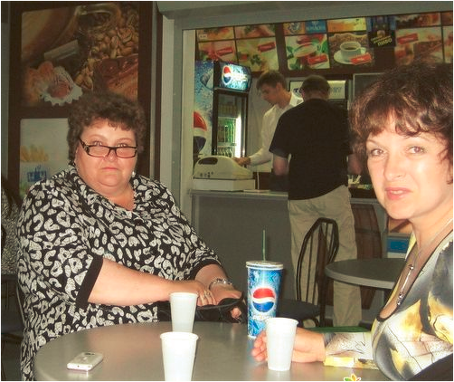
Я (слева) с Татьяной Малаховой (справа). Лицо такое удивленное потому, что я все никак не могу поверить в возможность питаться сытно и стройнеть!
Слово «досыта» у меня прочно ассоциировалось только с одним: с мощным «привесом». Всякий раз, как я позволяла себе наедаться до отвала, не обращая внимания на калории, разносило меня как на дрожжах. Сразу же.
Однако ответы на все мои недоверчивые вопросы были однозначными: нет, тренировки не обязательны, вообще никакие.
Да, можно и НУЖНО питаться сытно и постоянно эту сытость ощущать.
Нужно только чуть подкорректировать график приема пищи, научиться правильно сочетать продукты друг с другом и «подружиться» с некоторыми супержиросжигающими блюдами. Причем приготовить эти блюда можно из простейших ингредиентов, которые продаются в любом супермаркете.
Ах да: никакого подсчета калорий – Татьяна подробно и очень убедительно объяснила, почему такие подсчеты бесполезны.
Это звучало слишком хорошо и легко, чтобы быть правдой.
Тем не менее, уже через неделю я увидела на весах первый «отвес». За 4 месяца мне удалось влет избавиться от 25 килограммов! Причем я действительно не испытывала чувства голода, я ела много и со вкусом и не сделала за это время ни одного упражнения.
Триумф на «Пусть говорят»
И вот тут-то мне пришлось порадоваться, что в прошлый раз на программе «Пусть говорят» очередь до меня так и не дошла.
Потому, что меня пригласили на передачу снова, в новый выпуск, посвященный диетам, где героини прошлой такой же передачи демонстрировали свои успехи. Насколько же лучше было предстать перед многомилионной аудиторией первого канала уже постройневшей, посвежевшей, помолодевшей и… счастливой.
Вот, кстати, можете сами увидеть, как все было:
На тот момент я избавилась уже от 30 килограммов, о чем с радостью сообщила телезрителям. Позже мне удалось «сжечь» еще 5 кило. Вместо чудовищного 66-го размера одежды я перешла на 50-й и продолжаю носить его до сих пор.
Жизнь моя круто изменилась. Мне больше не нужны таблетки. «Диванное» существование перестало меня удовлетворять, ведь теперь я могу не просто сама забраться в автобус, я могу и пару километров на лыжах пройти с легкостью! Муж не устает на меня любоваться – я его с медового месяца таким нежным и влюбленным не видела. Более того, меня даже выдвинули в депутаты благодаря моему чудесному преображению!
Кстати, в Москву меня приглашали и в третий раз – на специальный выпуск программы «Пусть говорят», посвященный системе Татьяны Малаховой. Вот фрагмент из нее:
Шанс постройнеть для всех
Сейчас ко мне в «Одноклассники» постоянно добавляются незнакомые люди и просят раскрыть секрет похудения.
Сначала я честно пыталась делиться чем могла. Потом поняла, что не получается: система, при всей ее простоте, довольно объемна в изложении. Я боялась что-то напутать, переврать, да и времени на подробные ответы каждому мне не хватало.
Как же быть? Работать лично с каждым желающим так, как со мной, Малахова, конечно, не смогла бы.
Выход нашелся неожиданно: я узнала, что Татьяна собирается проводить мастер-класс в режиме онлайн для самых мотивированных слушателей.
Участвовать в нем можно из любой точки мира – нужен только компьютер и доступ в интернет. Причем участие не стоит ни копейки! Татьяна все так же готова бесплатно помогать людям, как помогла мне несколько лет назад.
Единственное – количество мест на мастер-классе просто по техническим причинам ограничено. Так что, если вы хотите попасть в число «везунчиков», которым бесплатно достанутся знания, которые вернули мне и тысячам других людей стройную фигуру и радость жизни, прямо сейчас, не откладывая, перейдите на сайт Татьяны Малаховой (ссылка) и зарегистрируйтесь для участия в мастер-классе.
Либо оставьте свой адрес электронной почты в форме ниже прямо на этой странице.
Должна предупредить: я не знаю, сколько раз Татьяна собирается проводить бесплатные мастер-классы.
Вполне возможно, что первый же повтор такого мероприятия будет стоит денег – ведь, в конце концов, аренда интернет-платформы, оборудование и время востребованного эксперта в области снижения веса чего-то стоят.
Так что я очень советую воспользоваться этим шансом, пока можно. Будет обидно обнаружить, что из-за собственной нерешительности бесплатно посетить мастер-класс вы уже не можете, а вход вам теперь не по карману.
Регистрируйтесь (ссылка),стройнейте и обретайте счастье так же, как обрела его я! От всей души желаю вам успеха.
В феврале 2012г в программе А.Малахова "Пусть говорят" увидела и услышала Татьяну Владимировну. С 25 февраля я на системе. Начинала с веса 113кг. Сейчас мой вес 70кг. За 240дней ушло 43кг. Ушли не только лишние кг. Ушли болезни. Так сложилось, что в течении 25 лет я принимала гормоны. С апреля месяца я не выпила ни одной таблетки. А ведь пила таблетки, можно сказать, горстями. От давления, от сердца, от печени, от почек... Организм рассыпался. А теперь, когда от меня, можно сказать, отпочковался как- бы второй человек , организм стал работать на меня одну!Давление в норме, сахар в норме, результаты всех анализов в норме.
Татьяна Корнеева
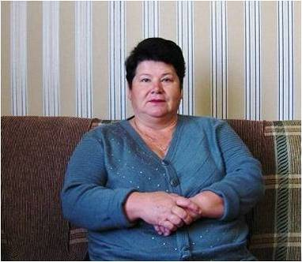
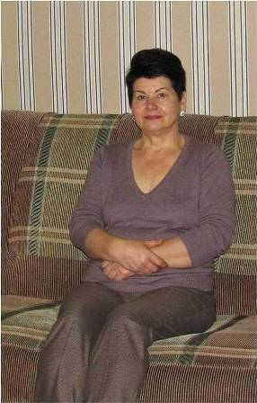
Февраль 2012г. Вес 113кг.
Октябрь 2012г. Вес 70кг
Ого! (удивленный смайлик) 43 кг! Вы просто героиня!
Светунчик
Я об этой системе питания узнала в сентябре 2016 года. Приступила 27 февраля 2017 года Великим постом. Сложностей не обнаружила, пыталась действовать без рывков и постепенно, вес уходил даже на начальном этапе. Цели и приоритеты мои не менялись на протяжении всего пути, менялось только восприятие себя и настроение, ведь главная моя цель была достигнута сразу, я впервые в жизни соблюдала пост, и вполне спокойно продолжаю это делать. Результат свой считаю вполне адекватным 25 кг за 10 месяцев на системе, в среднем 2,5 кг в месяц – вполне приемлемая норма, при таком темпе и мой организм и я успевали со всем справляться, что при хронических болезнях не маловажно.
Фотографироватья я раньше не любила, потому и нормального фото без верхней одежды за тот период у меня нет, потому покажу хоть это, здесь я с весом 90 кг, снято это в начале октября 2016.
Людмила
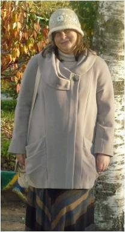
Октябрь 2016г.
А это март 2018, вес 63 кг
Людмила, какая ты стройняшка! Вот что значит ответственный подход к делу. Пусть твоё преображение будет стимулом для новичков (и не только для них! ).
Татьяна Рябова
У меня эйфория!!! Я присоединилась к вам 4 дня назад и уже вес снизился на 4 кг 100 г! Никогда ещё вес не уходил так быстро и при этом - никакого дискомфорта. Питаюсь, абсолютно не испытывая чувства голода! Перестройка организма длилась 2 дня. Уже заинтересовала двух знакомых, рассказав о методике Татьяны Малаховой. У нас о ней практически никто не слышал.
Марина mka
Расскажу о своих успехах. Сейчас мой вес 86.6. Скинул уже 47 килограмм. До заветной цели 3 килограмма. Всё таки я добился своей цели. Того что бы меня напечатали в самом популярном мужском журнале Men'sHealth
Yayoo
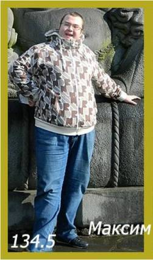
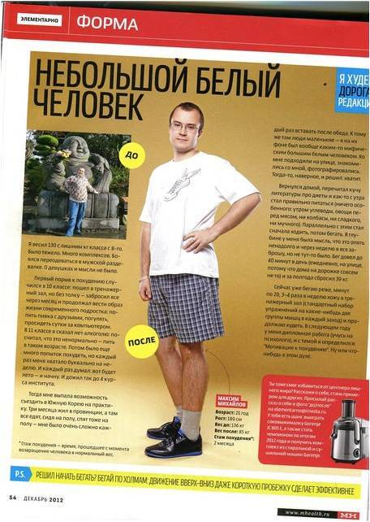
А вот как было до системы:
После:
Yayoo, Ничего себе!
Алла
Таня, а «колбасоежкам» подойдет?:) Я не очень по сладкому, но без колбаски и сала себе жизни не представляю… в итоге вешу сейчас 82 кг при росте 163 см… :(
Marina73
Марина, подойдет, не сомневайся! Я знаю многих людей, кто тоже любил больше жирное мясо, жареную картошку, и все они на системе Малаховой постройнели так же, как и я!
Татьяна Рябова
Очень интересно, хочу попробовать! Но боюсь, что мне и это не поможет с моим гипотиреозом…
Галочка
Галочка, я знаю женщину, которая на этой системе похудела на 65 килограммов с аутоимуннымтироидитом, причем в очень пожилом возрасте. Просто попробуй, у тебя тоже получится! В конце концов, ты ж ничем не рискуешь, мастер-класс бесплатный...
Татьяна Рябова
Я добилась такого результата о котором даже и не мечтала. Сейчас вешу 59кг.500грамм, а весила раньше 85кг. Все это благодаря системе Татьяны Малаховой. Конечно я добилась нужного результата, но на этом останавливаться не собираюсь, буду продолжать питаться так же.. Жизнь как будто заново началась, очень хорошо себя чувствую, больше энергии появилось. Забыла что такое усталость и настроение намного лучше. Всем советую не сдаваться и не отчаиваться, если у меня получилось, то и у вас получится. Да здравствует новая жизнь!)
А вот фотографии:
Rita_rvs
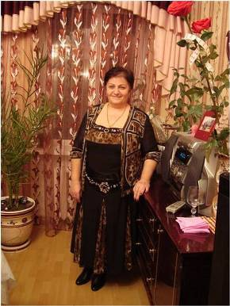
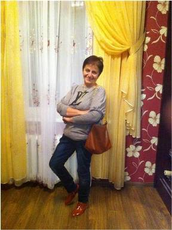
Доооооооооооо)
Послееееее))
Ура!!! у мну сегодня очередной отвес)))
Konbat
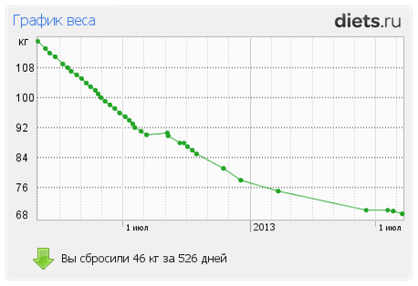
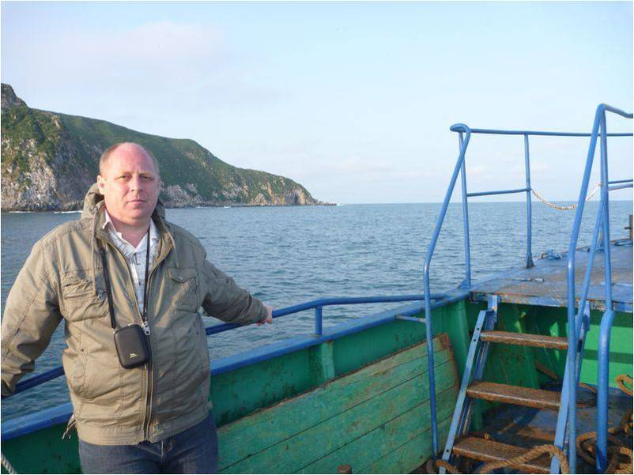
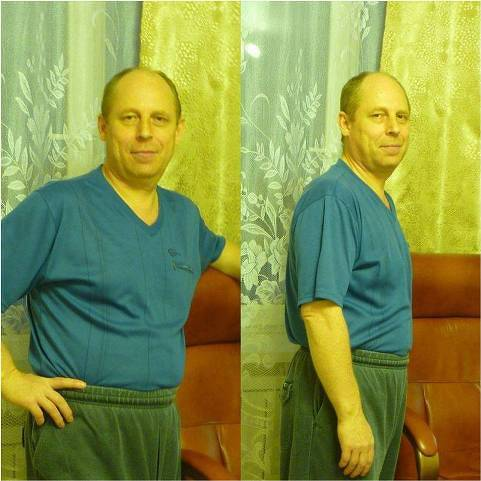
Тут все по 40+ кило сбрасывают, как я погляжу… Мне поменьше надо, всего 10 кэгешек)) Стоит вообще браться за эту систему для такого небольшого похудения?))
Lora
Lora, еще как стоит! Сбросить 40 килограммов посложнее будет, чем 10! Но главное, что на системе поддерживать достигнутый вес очень легко, так что смело сжигай свою лишнюю «десятку» и оставайся стройняшкой!
Татьяна Рябова
Здравствуйте, все кто зарегистрирован в блоге и гости,которые еще ищут свой метод избавления от избыточного веса.Особенно хочу обратить внимание тех дам,которым больше 60 лет, и у которых имеется, так называемое, морбидное ожирение, т.е. смертельное., когда ИМТ больше 40кг/м в квадрате, т.е. масса тела превышена на 45-50% от нормальных ее значений. Пишу для тех тяжеловесов, которые опустили руки и считают себя тяжело больными и несчастными, но ждущими от жизни чуда, когда появится волшебник и их страдальцев "похудеет".
Мне 62 года, с 06.06.15 года я полностью перешла на систему. К этому числу вес был 152.2кг. Этот период я считаю вторым днем моего рождения. На сегодняшний день мой вес 115.5 кг. Я вышла из зоны морбидного ожирения и 41.2 кг отправила в "облако", почему в "облако" так как я остаюсь пока толстой и стоит чуть отпустить себя в ленивое существование жировые клетки тут же наполнятся (ведь они не исчезают окончательно, а только съеживаются), да еще и размножатся. Хоть я и остаюсь еще толстой, но ощущения такие словно мне не 62 года, 30 лет. Стала ходить, по дому даже без трости, выполнять всю домашнюю работу, только окна еще сама не могу помыть из-за проблем с суставами и позвоночником и пользоваться по этой же причине городским транспортом, стала ездить к внуку, хоть и на такси, но без посторонней помощи, а год назад без сопровождения не могла даже из подъезда выйти.
15 месяцев назад я пришла на сайт с целью снизить вес, чтобы гробик был легче, а теперь хочу сказать не дождетесь! Дорогие супертяжеловесы пенсионного и не пенсионного возраста тоже!Если Вы не выгоните себя из зоны комфорта лень Вас утопит в море жира. А в помощь Вам Татьяна Владимировна Малахова подарила не удочку а рыболовный сейнер со всем оснащением. А у меня впереди еще 35.5 кг, но это уже меньшая часть груза, который был на мне 15 месяцев назад. Всем удачи, стройности и здоровья.
Комментарии:
В феврале 2012г в программе А.Малахова "Пусть говорят" увидела и услышала Татьяну Владимировну. С 25 февраля я на системе. Начинала с веса 113кг. Сейчас мой вес 70кг. За 240дней ушло 43кг. Ушли не только лишние кг. Ушли болезни. Так сложилось, что в течении 25 лет я принимала гормоны. С апреля месяца я не выпила ни одной таблетки. А ведь пила таблетки, можно сказать, горстями. От давления, от сердца, от печени, от почек... Организм рассыпался. А теперь, когда от меня, можно сказать, отпочковался как- бы второй человек , организм стал работать на меня одну!Давление в норме, сахар в норме, результаты всех анализов в норме.
Татьяна Корнеева
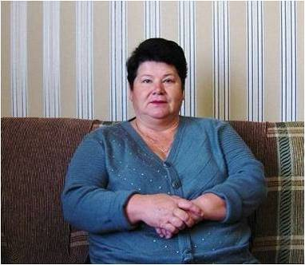
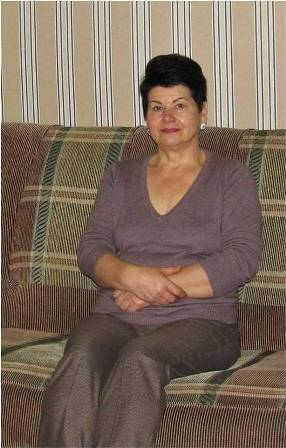
Февраль 2012г. Вес 113кг.
Октябрь 2012г. Вес 70кг
Ого! (удивленный смайлик) 43 кг! Вы просто героиня!
Светунчик
Я об этой системе питания узнала в сентябре 2016 года. Приступила 27 февраля 2017 года Великим постом. Сложностей не обнаружила, пыталась действовать без рывков и постепенно, вес уходил даже на начальном этапе. Цели и приоритеты мои не менялись на протяжении всего пути, менялось только восприятие себя и настроение, ведь главная моя цель была достигнута сразу, я впервые в жизни соблюдала пост, и вполне спокойно продолжаю это делать. Результат свой считаю вполне адекватным 25 кг за 10 месяцев на системе, в среднем 2,5 кг в месяц – вполне приемлемая норма, при таком темпе и мой организм и я успевали со всем справляться, что при хронических болезнях не маловажно. Фотографироватья я раньше не любила, потому и нормального фото без верхней одежды за тот период у меня нет, потому покажу хоть это, здесь я с весом 90 кг, снято это в начале октября 2016.
Людмила
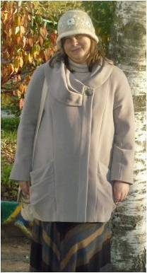
Октябрь 2016г.
А это март 2018, вес 63 кг
Людмила, какая ты стройняшка! Вот что значит ответственный подход к делу. Пусть твоё преображение будет стимулом для новичков (и не только для них! ).
Татьяна Рябова
У меня эйфория!!! Я присоединилась к вам 4 дня назад и уже вес снизился на 4 кг 100 г! Никогда ещё вес не уходил так быстро и при этом - никакого дискомфорта. Питаюсь, абсолютно не испытывая чувства голода! Перестройка организма длилась 2 дня. Уже заинтересовала двух знакомых, рассказав о методике Татьяны Малаховой. У нас о ней практически никто не слышал.
Марина mka
Расскажу о своих успехах. Сейчас мой вес 86.6. Скинул уже 47 килограмм. До заветной цели 3 килограмма. Всё таки я добился своей цели. Того что бы меня напечатали в самом популярном мужском журнале Men'sHealth
Yayoo
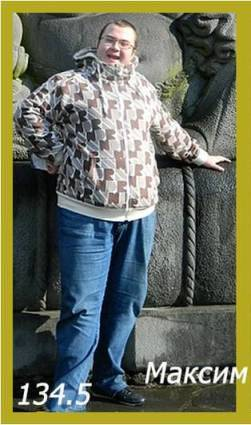
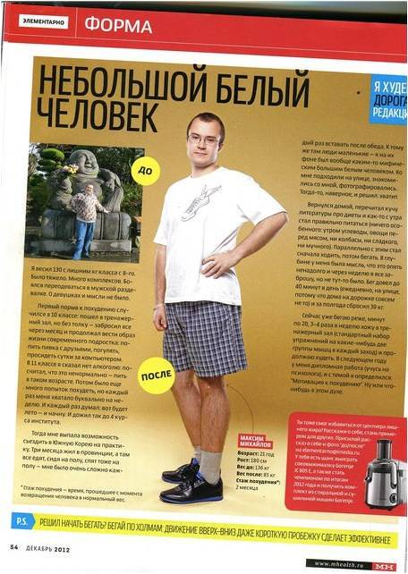
А вот как было до системы:
После:
Yayoo, Ничего себе!
Алла
Таня, а «колбасоежкам» подойдет?:) Я не очень по сладкому, но без колбаски и сала себе жизни не представляю… в итоге вешу сейчас 82 кг при росте 163 см… :(
Marina73
Марина, подойдет, не сомневайся! Я знаю многих людей, кто тоже любил больше жирное мясо, жареную картошку, и все они на системе Малаховой постройнели так же, как и я!
Татьяна Рябова
Очень интересно, хочу попробовать! Но боюсь, что мне и это не поможет с моим гипотиреозом…
Галочка
Галочка, я знаю женщину, которая на этой системе похудела на 65 килограммов с аутоимуннымтироидитом, причем в очень пожилом возрасте. Просто попробуй, у тебя тоже получится! В конце концов, ты ж ничем не рискуешь, мастер-класс бесплатный...
Татьяна Рябова
Я добилась такого результата о котором даже и не мечтала. Сейчас вешу 59кг.500грамм, а весила раньше 85кг. Все это благодаря системе Татьяны Малаховой. Конечно я добилась нужного результата, но на этом останавливаться не собираюсь, буду продолжать питаться так же.. Жизнь как будто заново началась, очень хорошо себя чувствую, больше энергии появилось. Забыла что такое усталость и настроение намного лучше. Всем советую не сдаваться и не отчаиваться, если у меня получилось, то и у вас получится. Да здравствует новая жизнь!) А вот фотографии:
Rita_rvs
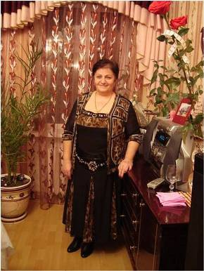
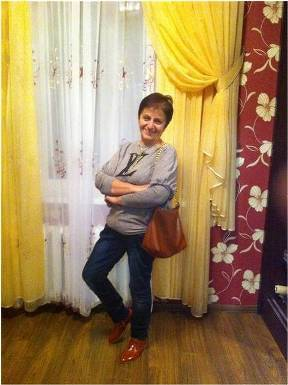
Доооооооооооо)
Послееееее))
Ура!!! у мну сегодня очередной отвес)))
Konbat
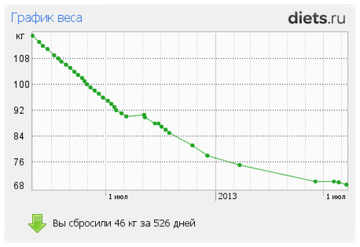
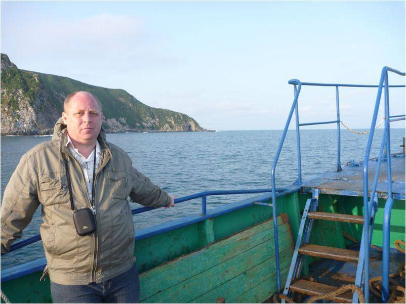
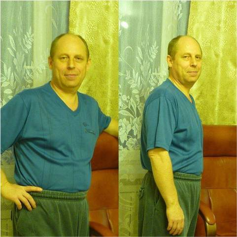
Тут все по 40+ кило сбрасывают, как я погляжу… Мне поменьше надо, всего 10 кэгешек)) Стоит вообще браться за эту систему для такого небольшого похудения?))
Lora
Lora, еще как стоит! Сбросить 40 килограммов посложнее будет, чем 10! Но главное, что на системе поддерживать достигнутый вес очень легко, так что смело сжигай свою лишнюю «десятку» и оставайся стройняшкой!
Татьяна Рябова
Здравствуйте, все кто зарегистрирован в блоге и гости,которые еще ищут свой метод избавления от избыточного веса.Особенно хочу обратить внимание тех дам,которым больше 60 лет, и у которых имеется, так называемое, морбидное ожирение, т.е. смертельное., когда ИМТ больше 40кг/м в квадрате, т.е. масса тела превышена на 45-50% от нормальных ее значений. Пишу для тех тяжеловесов, которые опустили руки и считают себя тяжело больными и несчастными, но ждущими от жизни чуда, когда появится волшебник и их страдальцев "похудеет". Мне 62 года, с 06.06.15 года я полностью перешла на систему. К этому числу вес был 152.2кг. Этот период я считаю вторым днем моего рождения. На сегодняшний день мой вес 115.5 кг. Я вышла из зоны морбидного ожирения и 41.2 кг отправила в "облако", почему в "облако" так как я остаюсь пока толстой и стоит чуть отпустить себя в ленивое существование жировые клетки тут же наполнятся (ведь они не исчезают окончательно, а только съеживаются), да еще и размножатся. Хоть я и остаюсь еще толстой, но ощущения такие словно мне не 62 года, 30 лет. Стала ходить, по дому даже без трости, выполнять всю домашнюю работу, только окна еще сама не могу помыть из-за проблем с суставами и позвоночником и пользоваться по этой же причине городским транспортом, стала ездить к внуку, хоть и на такси, но без посторонней помощи, а год назад без сопровождения не могла даже из подъезда выйти. 15 месяцев назад я пришла на сайт с целью снизить вес, чтобы гробик был легче, а теперь хочу сказать не дождетесь! Дорогие супертяжеловесы пенсионного и не пенсионного возраста тоже!Если Вы не выгоните себя из зоны комфорта лень Вас утопит в море жира. А в помощь Вам Татьяна Владимировна Малахова подарила не удочку а рыболовный сейнер со всем оснащением. А у меня впереди еще 35.5 кг, но это уже меньшая часть груза, который был на мне 15 месяцев назад. Всем удачи, стройности и здоровья.
Миронова Лилия Ивановна, 62 года.